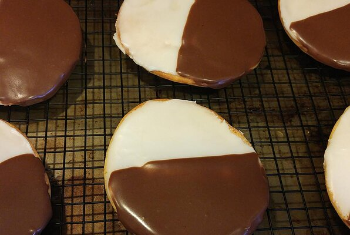

Black & White Cookies

(recipe from: allrecipes.com by Mary Jane)
Description
New York style Black & White Cookies
Ingredients
Yields 24 servings
- 1 cup unsalted butter
- 1¾ cups white sugar
- 4 large eggs
- 1 cup milk
- ½ teaspoon vanilla extract
- ¼ teaspoon lemon extract
- 2½ cups cake flour
- 2½ cups all-purpose flour
- 1 teaspoon baking powder
- ½ teaspoon salt
- 4 cups confectioners' sugar
- ⅓ cup boiling water
- 1 (1 oz) square bittersweet chocolate, chopped
Steps
- Preheat oven to 375 degrees F (190 degrees C). Butter 2 baking sheets.
- In a medium bowl, cream together butter and sugar until smooth.
Beat in eggs one at a time, then stir in the milk, vanilla,
and lemon extract. Combine cake flour and all-purpose flour,
baking powder, and salt; gradually blend into the creamed mixture.
Drop tablespoonfuls of the dough 2 inches apart on prepared baking sheets.
- Bake until edges begin to brown, about 20 to 30 minutes. Cool completely.
- Place confectioners sugar in large bowl. Mix in boiling water one
tablespoon at a time until mixture is thick and spreadable.
(Add more than the indicated amount if you need to).
- Transfer half of the frosting to the top of a double boiler set over
simmering water. Stir in the chocolate. Warm mixture, stirring frequently,
until the chocolate melts. Remove from heat.
- With a brush, coat half the cookie with chocolate frosting and the other
half with the white frosting. Set on waxed paper until frosting hardens.
Note
None
Nutrition Facts
Per Serving:
327 calories; protein 4.1g; carbohydrates 57.4g; fat 9.4g; cholesterol 52.2mg;
sodium 86.6mg.